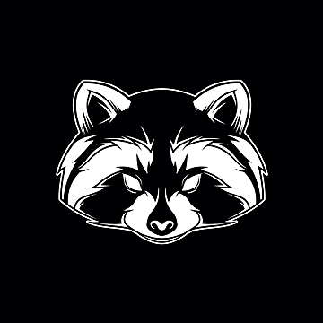

Mērķis ir uztaisīt mājaslapu nakts klubam.
Tajā būs iespējas apskatīt galeriju, kalendāra eventus, info utt.
Mājas lapā varēs ari pierakstīties eventos un reģistrēt grupu.
Būs arī merch shop, kas ir uzņēmuma apdrukas drēbes.
Website protams varēs ielagoties un uztaisīt jaunu kontu, pie tam visi konti, pieteikumi, grupas utt. būs saglabātas datubāzē.
Adminstrātoram būs iespēja noņemt grupas vai cilvēkus, uztaisīt jaunus eventus un ielikt tos kalendāros.

Vēlmes
Vel lietas ko es gribētu realizēt, bet nezinu vai es esu spējīgs ir:
Uztaisīt īstu naudas sistēmu prieks merch shop.
...
...
Brīvības iela:
T-C - 20:00-03:00
PK-SV - 14:00-06:00
×
DZĒRIENI
Nakts kluba “Jenoti” bārs ir vieta, kur var atrast izmeklētu dzērienu klāstu, kas apmierinās dažādu gaumi un vēlmju apmeklētājus.
Dzērienu piedāvājums ir plašs un rūpīgi izvēlēts, lai katrs viesis varētu atrast sev piemērotāko.
Bārmeņi ir prasmīgi un draudzīgi, vienmēr gatavi ieteikt jaunas garšas un radīt dzērienus, kas papildina kluba īpašo atmosfēru.
Viesiem tiek piedāvātas dažādas akcijas un īpašie piedāvājumi, kas padara katru vakaru vēl patīkamāku un pieejamāku, ļaujot pilnībā izbaudīt nakts dzīvi klubā “Jenoti”.
×
DJ un Izpildītāji
Nakts kluba “Jenoti” DJ un izpildītāju programma ir rūpīgi veidota, lai katru vakaru piepildītu ar enerģiju un izklaidi.
DJ piedāvā plašu mūzikas izvēli, kas aptver dažādus žanrus, radot atmosfēru, kas piemērota gan deju grīdai, gan atpūtas zonām.
Regulāri tiek aicināti arī viesu izpildītāji, kas piešķir katrai naktij savu īpašo noskaņu un unikālu pieredzi apmeklētājiem.
Gan vietējie, gan starptautiskie talanti iepriecina ar saviem setiem un priekšnesumiem, nodrošinot, ka katra kluba apmeklējuma reize ir jauns piedzīvojums.
×
DARBA LAIKS
Nakts klubs “Jenoti” ir radījis ērtu un pielāgotu darba laiku, lai apmierinātu dažādu apmeklētāju vajadzības un ļautu izbaudīt nakts dzīvi pilnā apjomā.
Krišjāņa ielas klubs piedāvā iespēju apmeklēt to agrākos vakaros no otrdienas līdz ceturtdienai, strādājot no 16:00 līdz 01:00, kas ir ideāli piemērots tiem, kuri vēlas baudīt mierīgāku vakaru pēc darba vai atpūtas brīvdienās.
Savukārt piektdienās un sestdienās Krišjāņa ielas klubs paliek atvērts līdz pat 06:00 no rīta, nodrošinot iespēju izklaidēties līdz saullēktam, kad mūzika un dejas turpinās līdz rīta stundām.
Brīvības ielas klubs atšķiras ar vēl vēlāku darba laiku darba dienās, sākot no 20:00 un beidzot 03:00, kas piesaista tos, kuri dod priekšroku vēlām vakara aktivitātēm.
Nedēļas nogalēs Brīvības ielas klubs sāk darbību jau 14:00 un darbojas līdz 06:00 no rīta, piedāvājot ilgāku laika posmu un iespēju baudīt gan agrīnus, gan vēlus vakarus, pielāgojoties dažādiem apmeklētāju dzīves ritmiem.